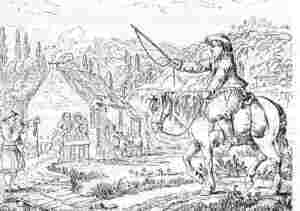

Milinerez Pontaro

|
1. E Banaleg ' zo 'r pardon kaer
|
12.Ganti deus he brec'h
ur paner
Frezoù ker melen ha ker kaer! 13.Frezoù deus jardin ar maner, Bleunioù fin warno, kemener 14.En em sell a rae 'barzh ar stêr Ne oa vil, en dailh, na dister ! 15.Hag a gane ken alies : "- Me 'garfe bout milinerez 16.Me garfe bout, a-greiz-kalon, Milinerez meilh ar baron" 17.- Miliner, n'em godisit ket : Ma Fantig koant din daskorit 18.- Ha pa rofec'h din pemp kant skoed Ho tous Fantig n'ho pezo ket 19.N'ho pezo ket ho tous Fanchon Chom a ray e meilh ar baron 20.Ho tous Fantig n'ho pezo ket Rak emañ ganin gwalennet 21.Chom a ray gant 'n aotrou Youenn A zo ur c'hristen mat a zen" 22.Milinerien zo paotred ge ! Ne raent mui nemet kanañ 'nhe 23.I a lare 'n ur c'hwitellat : - Krampouezh hag amann a zo mat ! 24.Krampouezh hag amann a zo mat ! Ha nebeudig eus peb sac'had 25.Ha nebeudig eus peb sac'had Hag ar merc'hed kempenn avat ! |
Extraits des carnets de collecte de La Villemarqué

|
P.28
AR MILINEREZ FAÑCHIG (4) Julian Ar Gac'h zo glac'haret: E oc'hen bras e-deus kollet, Hag ar vravañ deus e verc'hed . P.29 (5) - Julian Ar Gac'h, 'n em gonfortit: Ho merc'h Fanchig n'eo ket kollet. (6.1) Ema du-ze e meil he faeron , (9.2) Tri bouked roz war he c'halon. (23) Milin a lar dre c'hwitellat: "Krampouez amann a zo mat (24.2) A-nebeudig deus peb sac'had. Variante (1) Ur pardon zo e Banaleg E-lec'h vez laeret ar merc'hed. P.121 FAÑCHIG 1 (a) Me wel Fañchon dont d'ar vilin Digant he tavañjer lien, Tavañjer lien, he boutoù-lêr, Da wel he dousig miliner . - Boñjour dit, paotrig miliner! Emaout o valañ gant ar milin? Variante (b) - Deus ganin d'al lok-an-dour Hag ar veil a valo flour. Ya, me zo oc'h ober greunad bleud, Pa kortoz ez aio er zac'h, Me ra bouchoù d'ar plac'h... - |
P.122
(15) Ar plac'h yaouank a lavare: - Me garfe bout milinerez , he. (c) - C'hwi a vo, sur, milinerez, Gwellañ gwreg vo en ar barez. Pa yefec'h d'ar foar, d'ar marc'had, Vo en ho chakod gwerzh boutailhad. - Eurvat, eurvat, d'eoc'h-c'hui ta, Fañchon Ha ...zo laezh an daou-vron. Di... yaon zo deuet di...où n'eus ket Digant ar viliner n'eo ket. P.136 FAÑCHIG 2 - Ne glevez ket O miliner? (17.2) Deut ma merc'h d'in d'ar ger! (20) - Ho merc'h Fañchig, n'ho-pezo ket, Kar ema ganin gwalennet - (22) Ar vilinerien zo paotred ge Ne ra nemed c'hwitellad 'nhi (23) Hi a laran dre c'hwitellad... Variante (7) - Tok, tok, tok, Yann Ar Boskler , Degas va merc'h Fañchon d'ar ger!- P.155 FAÑCHON (d) Selaouit holl, ha selaouit... D'ur plac'h a oa e Banaleg. O vont d'ar pardon ema kollet... (1) E Banaleg zo 'r pardon kaer Ya ar plac'hig.. gant al laer. |
(7) - Tok, tok,
meiler paeron
.
Roit-c'hwi din-me va merc'h Fañchon. - (2) Eno vez gwelet ar baotred Ganto kezeg bras ha bridet. (e) Gant... Minteli glas ha krochetet P.156 (3) Hag o zokoù ne vez med bleuñv Graet evit debochiñ ar merc'hed. (7) - Tok, tok... - Gaou a larez c'hreiz da galon (8) N'am-eus ket gwelet ho merc'h Fañchon. Nemed ur wech e milin Vadon. (11) Ar bouked roz war he c'halon. Hag unan ganti e peb dorn. (14) Ha hi lare ken alies: "Ma a gar bout milinerez; (16) Me garfe, e-leiz va c'halon Boud milinerez e Meil Vadon . (18) - Ha c'hwi rofet d'in pemp kant skoed Ho merc'h Fañchon c'hwi n'ho-po ket. (19) N'ho-pezo ket ho merc'h Fañchon: Chom a ray gant meiler Meil Vadon. (10) Me preno dezhi ur koef lin melen, Gortoz ... Variante (14) En em zellas e-barzh ar ster Ne voa ket divalav na dister. (f) En em zellas e-barzh an dour En em zellas vel barzh ur mirouer. |
Ton 1, kempennet gant Christian Souchon